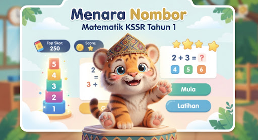
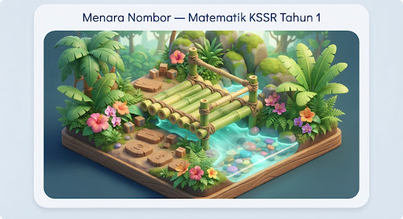

castle
KSSR Matematik Tahun 1
star
4 / 6 Bintang
Menara Nombor Ajaib
Tingkat 4 daripada 6: Cabaran Tambah Cepat & Pecutan Kristal
Ketinggian Menara
66% Selesai

bolt
Rimau Sahabat Wira
“Hebat Wira Adam! Selesaikan 3 soalan tambah lagi untuk pasang Jambatan Buluh Sungai Kristal!”
psychology
timer
Santai
Cabaran Utama
Soalan 3 daripada 5
Kumpulkan biji kristal sungai:
diamond
diamond
diamond
diamond
7 Hijau
diamond
diamond
diamond
5 Emas
7 + 5 = ?
tips_and_updates
Petua Rimau: Cukupkan 10 dahulu! (7 + 3 = 10, baki 2 lagi jadi 12)
Peta Kenaikan Menara
stairs
6 Tingkat Ilmu Matematik
lock
Tingkat 6: Puncak Menara
Bentuk 3D Geometri & Raja Berlian
lock
Tingkat 5: Susun Nombor Hingga 100
Pola Ganjil & Genap Sungai Deru
4
Tingkat 4: Tambah Cepat Lingkungan 20
Aktif
Cabaran Sedang Dijalankan (3/5)
check
Tingkat 3: Tolak Pantas Biji Saga
star
star
star
check
Tingkat 2: Kenal Nilai Tempat Puluh & Sa
star
star
star
check
Tingkat 1: Nombor 1 Hingga 10 Ceria
star
star
star
carpenter
Projek Kampung Wira
Tingkat 4 Ganjaran

Jambatan Buluh Sungai Kristal
Menghubungkan Kampung Hulu ke Menara Nombor.
star
+50 Bintang
diamond
+100 Syiling